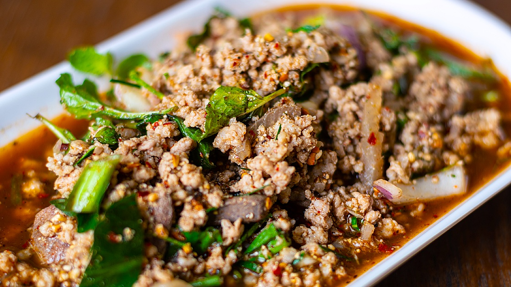

Larb Isan

Description
Larb is a dish that embodies the cultural heart and soul of the Northeastern region of Thailand known as Isan. Although known for its robust spiciness, every region, even every restaurant, in the Northeast may have its own particular recipe. Some may feature sour notes, while others are spicier and even others are on the bitter side. But they all have basically the same basic ingredients that epitomise the enchanting flavours in every bite of larb across Isan.
Ingredients
- Minced meat (traditionally beef)
- Lime juice
- Fish sauce
- Chilli powder
- Ground roasted rice
- Shallots
- Spring onions
- Mint leaves
- Coriander (optional)
Steps
- Bring water to boil over high heat. Add mince and cook, stirring vigorously with a large spoon to break up any large clumps, until meat turns gray and is cooked through, about 2 minutes. Remove from heat, and allow mince to cool for 30 seconds.
- Add fish sauce, lime juice, and ground chilli. Stir to combine and then allow to cool for 5 minutes.
- Add shallot, coriander (if using), spring onions, and stir to combine. At this point, make sure you have everything ready to go that you plan to serve with the larb, such as sticky rice. Once you are ready to serve, stir until thoroughly combined and most of the liquid in the saucepan has been absorbed, 10 to 15 seconds. Add mint and stir gently until just combined. Taste and adjust seasoning with more fish sauce, ground chiles, and/or lime juice as needed. The salad should be assertive—acidic, salty, and spicy—but balanced. Serve immediately with cooked sticky rice.